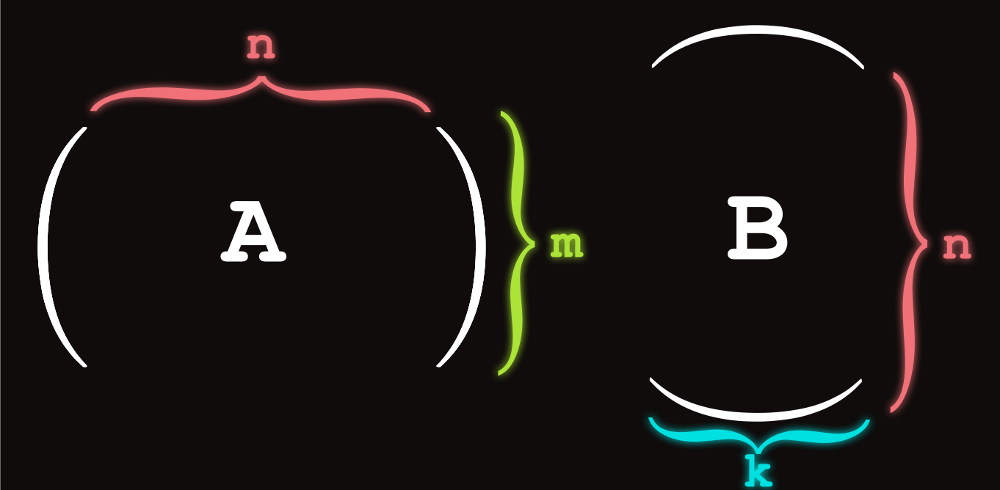
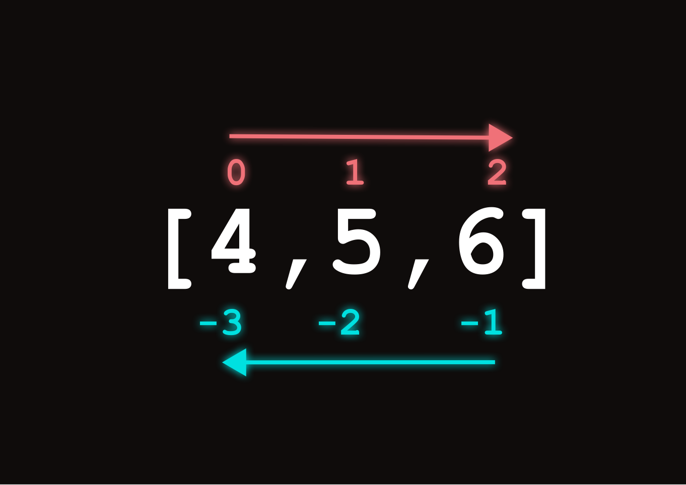
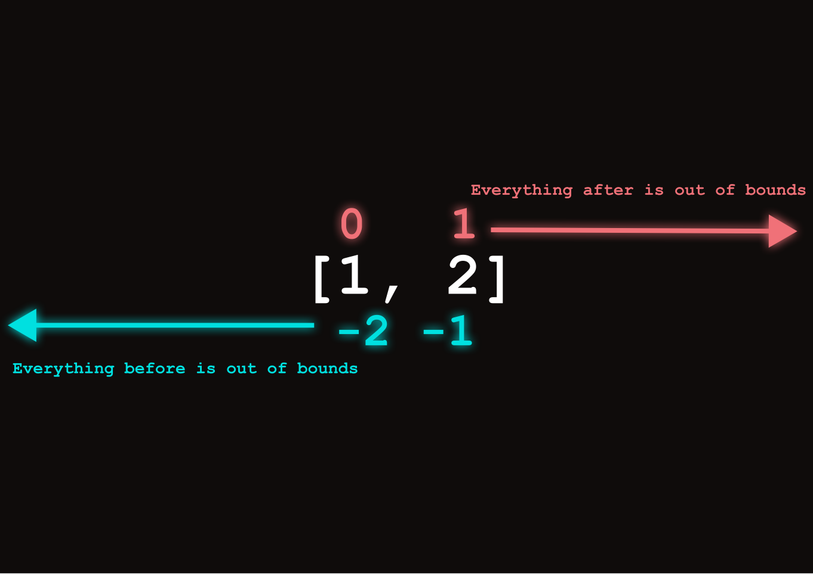
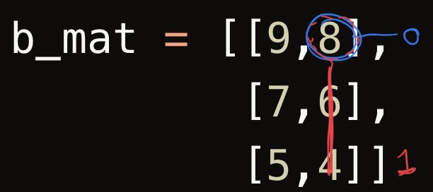

a_mat = [[1,2,3],
[4,5,6]]
b_mat = [[9,8],
[7,6],
[5,4]]
c_mat = [[0,0],
[0,0]]Introduction
Hello again! Last semester I was a TA for CSE 101 at SBU. CSE 101 is the intro course for computer science. I noticed that iteration and lists were one of the most challenging concepts to teach to the students in my recitation. All of my students ended up doing well though, so I want to write something that will help people outside of that course that are new to programming. All my students were taking linear algebra at the time I was teaching this, so basic knowledge of matrix multiplication is assumed.
I generally think that CS is best taught top down. So that is how I will teach this. First, I will show you the code that performs matrix multiplication to make you curious, then once we have established a goal to work toward, I will teach you the foundations you need to understand this code. Then I will walk you through the implementation step by step.
Problem statement
We want to write a program that prints \(C\) in the calculation \(A B = C\), where \(A,B\) and \(C\) are matrices. \(A\) and \(B\) are assumed to be a valid matrix multiplication, meaning that \(A\) is a \(m \times n\) matrix, and \(B\) is a \(n \times k\) matrix.

The Code
I will start by defining the matrices we are going to multiply.
Making our test case
Heres the code we will examine throughout this blog that performs this multiplication. a_mat and b_mat are the matrices we are multiplying, and c_mat is the resulting matrix. A general rule I teach my students is that before you implement anything, you should always make a test case first. So lets do that.
We will get into this matrix multiplication shortly, but some things you should know for now are:
- A
listin Python holds a bunch of elements. - You can think of it as a bunch of variables in 1 variable. If we have 3 variables
a=1,b=2andc=3, we could replace this with the listabc = [1, 2, 3]. Thena[0]=1, a[1]=2, a[2]=3respectively. - Lists can contain other lists. So if we had
a=[1,2,3],b=[4,5,6], andc=[7,8,9], we could replace these variables with 1 variable like so:abc = [[1,2,3],[4,5,6],[7,8,9]]. Thenabc[0]=[1,2,3],abc[1]=[4,5,6], andabc[2]=[7,8,9].
Knowing this, lets define the matrices we will multiply in Python. Don’t worry if this confuses you still. We will go over it in detail:
I initialize the values of c_mat to be all 0s for now since we will set them later. A multiplication of a \(m \times n\) and a \(n \times k\) is a \(m \times k\). Since a_mat is a \(2 \times 3\), and b_mat is a \(3 \times 2\), our resulting matrix, c_mat, will be a \(2 \times 2\).
So we have just coded our matrices, but to make this a test case we need to know what we want our code to set c_mat to. That way we know whether our code is doing the right thing. If you were implementing this on your own, you might make more then 1 test case to really make sure your code is solid.
In this case, we expect
c_mat = [[38,32]
[101,86]]once we have ran our multiplication code. You can verify it yourself with this website which multiplies 2 matrices for you.
The multiplication code
I will define some constants to make the code easier to read later.
M = len(a_mat)
N = len(b_mat)
K = len(b_mat[0])Here is the code that performs the matrix multiplication and sets each value of c_mat:
for i in range(M):
for j in range(N):
for k in range(K):
c_mat[i][k] += a_mat[i][j] * b_mat[j][k]c_mat[[38, 32], [101, 86]]We can see that this indeed matches our test case from earlier. So we know these “magic” lines of code work, but how?
How to read my blogs
I strongly believe in active learning. When I taught my class, I would constantly quiz my students to make sure they understood what I was saying. Answering questions pokes holes in your understanding and makes you aware of what you need to improve in. It also improves your memory retension. You are much less likely to forget, and will get much more out of what I have written in this post if you follow along like I describe below.
As you read this post, I encourage you to try running this code yourself, change things, and experiment. will give you some ideas for things to try on your own as we go. I will also frequently test your understanding by asking questions and hiding the answer from you in a foldable cell.
To make sure you are understanding what I am saying, lets try this format out right now before we continue.
What is the value of M in our code?
Code
2
# a_mat is a M x N matrix, as discussed in the problem statement.
# In our test case, c_mat is a 2x3 matrix, so M = 2What is the value of N in our code?
Code
3
# a_mat is a M x N matrix, as discussed in the problem statement.
# In our test case, c_mat is a 2x3 matrix, so N = 3Suppose we have the code
a = 4
b = 5
c = 6What is the value of b?
Code
5Equivalently, we can write our code like this and it will do the same thing as above, except with different variable names:
a0, a1, a2 = 4, 5, 6What is the value of a1?
Code
5
# a1 is the same as b between this question and the last one. Now suppose we write code to do the same thing again, but with lists as discussed in the previous section.
a = [4,5,6]What is a[1]?
Code
5
# The code is equivalent to the last 2 questions. a[1] = a1 = b. Last question, I promise, then we will dive deeper into the code I introduced.
a = [4,5,6]What is a[2]?
Code
6
# From our previous questions,
# a[2] = a2 = cExperiment: Try running the following code below. What does it output? Next, try changing index and see what happens.
a = [1,2,3]
index = -1
print(a[index])Now that you understand how to read my blogs, lets move on and discuss lists.
What is a list?
A list is made up of elements, each of which have an index associated with them. We already saw this before when I was asking you questions actually in the previous section.
- Element: A value inside of the list
- Index: A number that allows you to access a particular value in the list
For
a = [4, 5, 6]a is our list in this case. We can access the element 4 with a[0]. In other words, 0 is the index of the element 4.
In general, to access an element in a list arr at index i, we would do this with the following syntax:
arr[i]
In Python, positive indices start at the beginning and go toward the end of the list, and negative indices start at the end and move toward the beginning of the list.
Its important to note that not all languages support using negative indices inside of lists. Its a nice quirk of Python.
Concider the code below. What is x[1]?
x = [9, 2, 3, 6, 4]Code
x[1] = 2
# Very important: The first element in our list always starts at 0!!!!!!What is the index of the element 6 in x?
Code
x[3] = 6
# Therefore the index of 6 is 3.What is the value of x[-4]?
Code
x[-4] = 2x has 5 elements. So it has a length of 5. In general, we can get the length of any list in Python with the len() function.
x = [9, 2, 3, 6, 4]
len(x)5Elements of a list can be of any type, even within the same list, not just integers like i’ve shown so far. But the same rules apply for the indexing.
items = ["I", True, "ly", "would", "like", "some", 3.14159]Lets index some values in items
items[1]Trueitems[3]'would'Now its your turn. What is items[-1]?
Code
items[-1] = 3.14159In general, arr[-1] will get you the element at the end of the list. But suppose we didn’t have negative indexing. For example, many other languages such as C++ and Java do not have this luxury. So its good to know another way to do this.
If we have \(n\) elements in a list, then we want to get the \(n^{th}\) element of that list since that will be at the end.
So would arr[len(arr)] get you the last element of arr? As always when programming, lets try it and see what happens.
arr = [1,2,3,4,5,6]
arr[len(arr)]IndexError: list index out of rangeNo! It won’t…. huh. In fact it threw an error. Why?
Remember, indices always start at 0! Lets simplify the problem a bit and then you will see why this causes an error to happen. Lets define a smaller list.
a = [1,2]
Hopefully by now you should see that if we only use positive indices, the last element of a would be at index 1. So a[len(a)] = a[2] which intern is greater then the greatest index in the list, causing an IndexError. In general, if we have indices that are outside of the range of elements in the array, then we will crash the program.
Also notice how the last element of a has index 1, but len(a) returns 2 since there are 2 elements. We are always going to be “1 off” from the last element. To fix this, we can just subtract 1.
The following code will always get the last element of an array:
a[len(a) - 1]2items = ["I", True, "ly", "would", "like", "some", 3.14159]
items[len(items) - 1]3.14159We can see that this indeed works, not only with a, but with any list.
What would items[-len(items) - 1] do?
Code
items[-len(items)] = items[-8] = IndexError
# Throws an error. Our list is 7 elements long.
# So -8 is "one off" before the first element.What would items[-len(items)] do?
Code
items[-len(items)] = items[-7] = 'I'
# It will always return the first element.
# Unlike positive indices, negative indices start at -1.We can also assign to the values of lists the same way we would with variables:
items[2] = 'changed'
items['I', True, 'changed', 'would', 'like', 'some', 3.14159]We can see that we changed the 3rd element of items in the statement above to changed. All of the same indexing rules apply.
2D lists in Python
Recall that lists can contain any datatype. This means that we can have a list of lists! In fact, we already saw this when we were implementing our test case for the matrix multiplication. Lets concider our definition of a_mat again:
a_mat = [[1,2,3], [4,5,6]]Indexing these lists works the same as with any other datatype. a_mat[0] will get you the first list, and a_mat[1] will get you the second list.
a_mat[0][1, 2, 3]a_mat[1][4, 5, 6]What is the value of b_mat[1] from our matrix multiplication test case?
b_mat = [[9,8],
[7,6],
[5,4]]Code
b_mat[1] = [7,6]What is the value of b_mat[-1] from our matrix multiplication test case?
Code
b_mat[-1] = [5,4]Since we are obtaining a list as our element, we can index what we obtain to get a specific value of that sublist. For example, b_mat[0][1] will get the element at \(B_{0,1}\), which is 8.

b_mat[0][1]8Believe it or not, we can actually now start to understand the matrix multiplication code. Now we can understand how we are getting the M, N, and K variables.
M = len(a_mat)
N = len(b_mat)
K = len(b_mat[0])Inside of the matrix multiplication code, I first define these constants which describe the widths and heights of the matrices: \(A = m \times n\), \(B = n \times k\), \(C = m \times k\)
We can think of len(a_mat) to be the number of lists in a_mat, which intern are the number of rows in a_mat.
We can get the number of columns by getting the number of rows in \(B\) with len(b_mat) since \(B\) is required to have the same height as \(A\)’s width, else its not a valid matrix multiplication.
To get the number of columns in \(B\), we can examine the length of one of its rows with len(b_mat[0]). We don’t have to use the \(0^{th}\) row. We can get the length of any row and it will be the same. For example, the following code would get the same value for K, no matter the size of the matrix:
K = len(b_mat[-1])We now have the tools to write a basic matrix multiplication program… technically. We can now hard code the formula for multiplying a 2x2 matrix for example:
a_mat = [[1,2],
[3,4]]
b_mat = [[0,1],
[1,0]]
c_mat = [[a_mat[0][0]*b_mat[0][0] + a_mat[0][1]*b_mat[1][0], a_mat[0][0]*b_mat[0][1] + a_mat[0][1]*b_mat[1][1]],
[a_mat[1][0]*b_mat[0][0] + a_mat[1][1]*b_mat[1][0], a_mat[1][0]*b_mat[0][1] + a_mat[1][1]*b_mat[1][1]]]c_mat[[2, 1], [4, 3]]And we see that it clearly does work. But the code is incredibly hard to read and we can only do it for fixed dimensions. If we try to change the shape of our matrices, our program will break.
So there is another piece of the puzzle we need to implement our matrix multiplication program: iteration!
Lets pause for a second
We just went over alot. We are half way there. Don’t worry. If you look at where the scroll bar is on the page you can see there isnt alot left to go.
When I was learning how to use arrays for the first time, I couldn’t make heads or tails of it. It seemed like there are so many “weird” rules, exceptions, and concepts I need to master such as starting at 0, out of bounds indexing and more. Learning how to code is hard for everyone. So its important to realize that your not the only one going through this.
When I was TAing for CSE 101, I could see visible frustration on my students faces when I was helping them out during office hours. But they also got through this. Your no different then them. The most important advice that I can give you for CS, as general and corny as it may sound, is to not give up.
Another piece of advice I would give to you is to take a break once in a while. Sometimes after a long study session, when I take a break, the answer just comes to me. I have observed this in my students as well. So maybe concider taking a 10 minute break before you read the rest of this blog just to let what you’ve learned so far sink in.
Once your ready, lets move on to iteration.
What is a for loop?
Lets simplify by examining 1 part of the matrix multiplication problem. Suppose I have a list containing numbers, and I want to sum them all together:
arr = [1,2,3]
sum = arr[0] + arr[1] + arr[2]
print(sum)6We could do it like we did above: We add each element by manually indexing them. However, like our matrix multiplication problem, this solution becomes extremely tedious for large lists, and impossible if we don’t know the length of the list beforehand.
Lets redefine arr with another element added and you’ll see what I mean.
arr = [1,2,3,4]
sum = arr[0] + arr[1] + arr[2]
print(sum)6Our sum should be 10. No matter, we can fix this by manually adding another term to our sum:
arr = [1,2,3,4]
sum = arr[0] + arr[1] + arr[2] + arr[3]
print(sum)10Now it works! But suppose I remove an element from arr. So we now have the code
arr = [1,2,3]
sum = arr[0] + arr[1] + arr[2] + arr[3]
print(sum)What do you think will happen?
IndexError- Prints
6 - Prints
10
Code
IndexError
# We have 3 elements. Our maximum index is 2. We can fix this problem with for loops, which will allow us to vary the amount of terms in our sum. Lets see how to write code to sum the elements of a list, even when we don’t know what the length of it is!
This code
arr = [1,2,3]
sum = arr[0] + arr[1] + arr[2]
print(sum)Will produce the same output as:
arr = [1,2,3]
sum = 0
sum += arr[0]
sum += arr[1]
sum += arr[2]
print(sum)6Which will do the same thing as:
arr = [1,2,3]
sum = 0
for i in range(len(arr)):
sum += arr[i]
print(sum)6for i in range(N):
# insert code here to run N timesDo you see whats happening? A for loop takes the indented block of code, and runs it N times, setting the value of i in each iteration to successively increasing values starting at 0, and ending at N - 1.
What will the following code print?
for i in range(5):
print(i)Code
0
1
2
3
4
# You may have thought that it would print 5, that is a common mistake.
# Our loop ends at N - 1,
# just like indices of list with N elements ends at N - 1.The reason we can replace
sum += arr[0]
sum += arr[1]
sum += arr[2]with
for i in range(len(arr)):
sum += arr[i]is that the following happens:
- The for loop sets
i = 0 sum += arr[i]=>sum += arr[0]is ran- The for loops sets
i = 1 sum += arr[i]=>sum += arr[1]is ran
And so on all the way up to i = len(arr) - 1, when sum += arr[len(arr) - 1], in which the loop terminates and moves to the next line of code after it.
For loops solve our problem because no matter what len(arr) is, we will always have the correct amount of terms. This is important because we are using for loops to sum each of the products, for each of the entries in c_mat.
Experiment: Instead of summing the elements of arr, modify the code to take the product of all the elements.
Fill in the blanks to sum every odd index of arr:
sum = 0
for i in range(___):
sum += arr[___]Code
sum = 0
for i in range(len(arr) // 2):
sum += arr[2*i + 1]Fill in the blanks to sum all diagonal elements in arr, starting from the top left:
arr = [[1,2],
[3,4]]
sum = 0
for i in range(len(arr)):
sum += arr[__][__]Code
sum = 0
for i in range(len(arr)):
sum += arr[i][i]Ok, now we are going to get a little harder. It’s OK if you don’t get this one. It will simaltaneously give you a better understanding of our matrix multiplication problem, and give you more practice with for loops.
Fill in the blanks to sum all of the numbers in arr:
arr = [[1,2],
[4,5]]
sum = 0
for i in range(__):
sum += arr[__][i % len(arr)]Code
arr = [[1,2],
[4,5]]
sum = 0
for i in range(len(arr) * len(arr)):
sum += arr[i // len(arr)][i % len(arr)]Fill in the blanks to sum all of the numbers in arr (note the extra column):
arr = [[1,2,3],
[4,5,6]]
sum = 0
for i in range(__):
sum += arr[__][i % len(arr[0])]Hint: Think about the definition of M, N, and K
Code
arr = [[1,2,3],
[4,5,6]]
sum = 0
for i in range(len(arr) * len(arr[0])):
sum += arr[i // len(arr[0])][i % len(arr[0])]So this is a fun excersize, but the reality is that working with lists like this is going to get very complicated when we are juggling 3 matrices at once. There is a better way to think about iterating through 2d lists.
Just like we can have lists inside of lists, we can also have for loops inside of for loops. Another way to sum all of the elements of arr would be the following code:
sum = 0
for row in range(len(arr[0])):
sum += arr[0][row]
for row in range(len(arr[0])):
sum += arr[1][row]
print(sum)21You can probably already see the problem with this approach though. Our code requires exactly 2 rows to work properly. So we can replace the code above with
sum = 0
for col in range(len(arr)):
for row in range(len(arr[0])):
sum += arr[col][row]
print(sum)21Its the same idea as when you learned we could nest lists together. In general, if something can contain itself, then it opens up whole new dimensions of possibility!
We don’t have to stop here. We can nest as many for loops as we want. Same for lists, although for our problem we are only dealing with matrices which are 2d lists.
You have now learned about iteration. You now have the foundation to write the matrix multiplication code
Putting it all together
The keyword is you. You are going to write it. I will ask a series of questions to guide you in the right direction, and then by the end of this section, you will fully understand the code I showed you at the beginning of this blog post.
M = len(a_mat)
N = len(b_mat)
K = len(b_mat[0])
a_mat = [[1,2],
[3,4]]
b_mat = [[0,1],
[1,0]]
c_mat = [[a_mat[0][0]*b_mat[0][0] + a_mat[0][1]*b_mat[1][0], a_mat[0][0]*b_mat[0][1] + a_mat[0][1]*b_mat[1][1]],
[a_mat[1][0]*b_mat[0][0] + a_mat[1][1]*b_mat[1][0], a_mat[1][0]*b_mat[0][1] + a_mat[1][1]*b_mat[1][1]]]“And we see that it clearly does work. But the code is incredibly hard to read and we can only do it for fixed dimensions. If we try to change the shape of our matrices, our program will break.”
In a previous section, we got to a partial solution for our problem statement. We found out how to obtain M, N and K and we hard coded a way to multiply a 2x2 matrix. But we can do better. We need to generalize to any 2 valid matrices for multiplication.
c_mat is going to be a 2d list of 0s that we are going to sum to. Remember the sum variable from the previous section? We are basically going to use c_mat as a 2d list of them. It is OK to look at the original code to answer the following questions. The goal of these questions is to get you to analyze the code for yourself.
How many for loops will we need for our multiplication?
Code
3
# We need 2 for loops to iterate over the elements of a_mat and b_mat,
# and a 3rd for loop to keep track of where we are summing in c_matWhat should we replace __ * __ with?
a_mat = [[1,2,3],
[4,5,6]]
b_mat = [[9,8],
[7,6],
[5,4]]
c_mat = [[0,0],
[0,0]]
for i in range(N):
for j in range(K):
for k in range(M):
c_mat[k][j] += __ * __Code
for i in range(N):
for j in range(K):
for k in range(M):
c_mat[k][j] += a_mat[k][i] * b_mat[i][j]Congratulations! You now understand how to implement matrix multiplication in Python.
Conclusion
I am still trying to figure out how I want to write my blogs. I wanted to start off with something simple. I am discovering that the best blogs are not the ones that invent some new novel concept, but rather are the ones that can explain a concept as clearly as possible. As by “About” page says, I am interested in Computer Graphics, Vision, and Deep Learning. Future blogs will cover more advanced concepts, however matrix multiplication lies at the heart of all these fields. So I figured this was a good place to start.
This is a topic that by far the most people in CSE 101 struggled with. So I hope that future people who take this course will see this blog, and realize that although this stuff is complicated, its not out of their grasp.
Till the next blog! 🐍